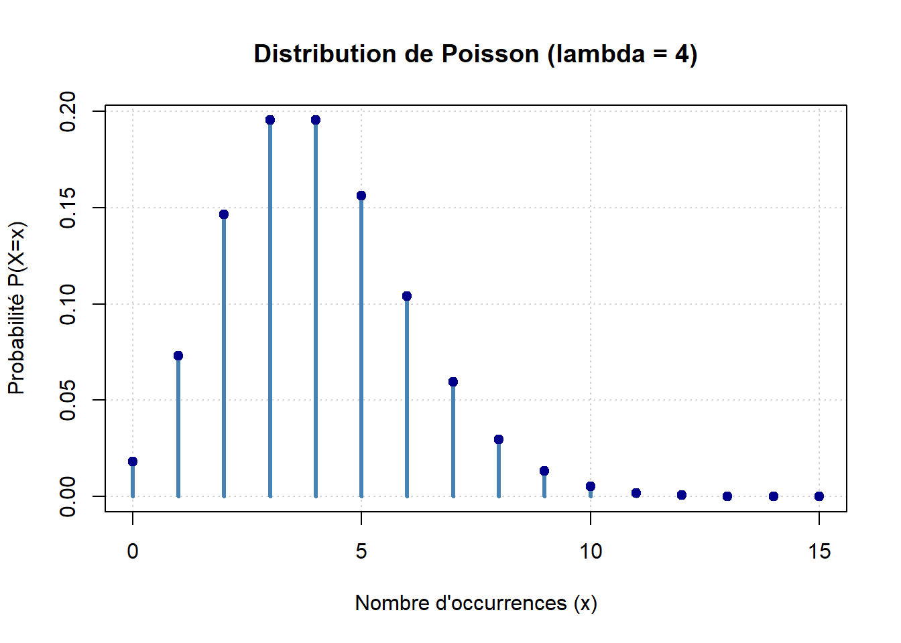
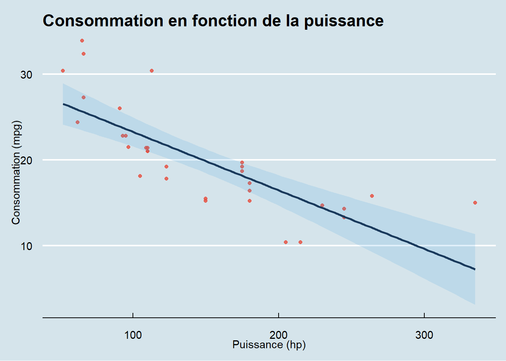
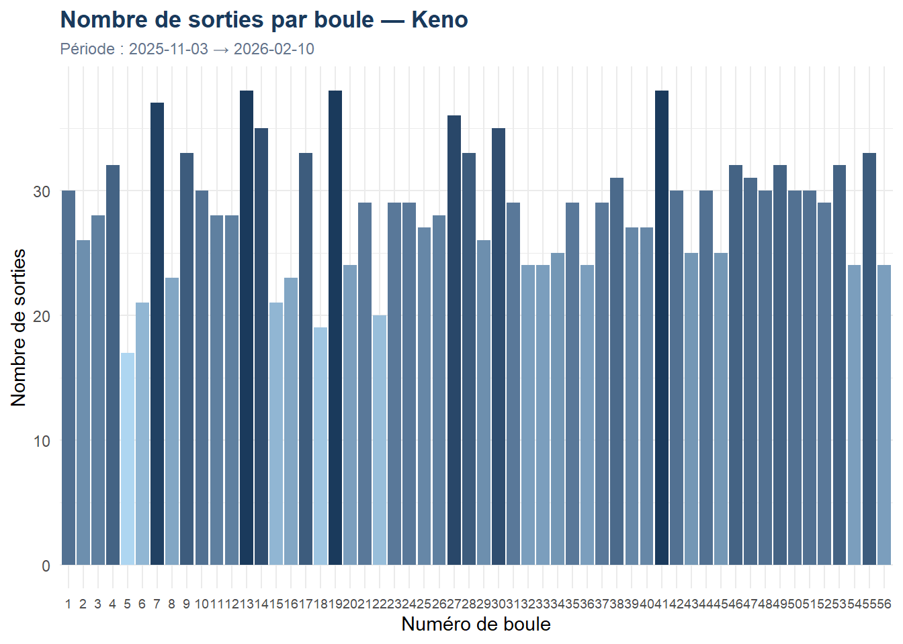

#| label: verification-et-installation-packages
#| echo: false
#| message: false
#| warning: false
# Liste globale de tous les packages requis pour ce document
packages_requis <- c("shiny", "tidyverse", "ggthemes", "stargazer", "readr", "scales")
# Boucle de vérification automatique
for (pkg in packages_requis) {
if (!require(pkg, character.only = TRUE, quietly = TRUE)) {
install.packages(pkg, dependencies = TRUE, repos = "[https://cloud.r-project.org](https://cloud.r-project.org)")
library(pkg, character.only = TRUE)
}
}Projet Initial
Introduction à Quarto — Shiny, Tidyverse & Régression
1 Introduction
Pour présenter Quarto, nous nous référons à l’article de Evans (s. d.). L’auteur y montre un exemple de formules mathématiques en LaTeX. Nous avons reproduit son exemple (figure 2 de l’article) ci-dessous.
Soit \(Y\sim \text{Bin}(n,p)\), où \(n\geq1\) et \(0\leq p\leq1\). La fonction de masse de probabilité de \(Y\) est donnée par :
\[ P(Y=y)=\binom{n}{y}p^y(1-p)^{n-y}, \quad y=0,1,2,\ldots, n. \]
# 1. Définition du paramètre (si non défini précédemment)
lambda_val <- 4
# 2. Création des données (de 0 à 15 événements)
x <- 0:15
y <- dpois(x, lambda = lambda_val)
# 3. Visualisation graphique
plot(x, y,
type = "h", # "h" pour des lignes verticales (plus adapté au discret)
lwd = 3, # Épaisseur des lignes
col = "steelblue", # Une couleur plus professionnelle
main = "Distribution de Poisson (lambda = 4)",
xlab = "Nombre d'occurrences (x)",
ylab = "Probabilité P(X=x)",
panel.first = grid()) # Ajoute une grille en arrière-plan
# Ajout de points par-dessus les barres pour le style "b" (both)
points(x, y, pch = 19, col = "darkblue")
2 Shiny — Application Interactive
L’application Shiny ci-dessous permet de visualiser interactivement la loi Gamma en modifiant ses paramètres de forme (\(\alpha\)) et d’échelle (\(\theta\)).
library(shiny)
ui <- fluidPage(
withMathJax(),
titlePanel("Visualisation Interactive : Loi Gamma"),
sidebarLayout(
sidebarPanel(
helpText("Modifiez les paramètres pour voir l'impact sur la courbe."),
sliderInput("alpha", "Forme (Shape) : \\(\\alpha\\)",
min = 0.1, max = 10, value = 2, step = 0.1),
sliderInput("theta", "Échelle (Scale) : \\(\\theta\\)",
min = 0.1, max = 5, value = 2, step = 0.1),
hr(),
helpText("Formule de la densité :"),
uiOutput("latex_formula")
),
mainPanel(
plotOutput("gammaPlot"),
wellPanel(
h4("Indicateurs Théoriques"),
textOutput("esperance_text"),
textOutput("variance_text")
)
)
)
)
server <- function(input, output) {
output$latex_formula <- renderUI({
withMathJax(
paste0("$$f(x) = \\frac{x^{", input$alpha, "-1} e^{-x/", input$theta, "}}{",
input$theta, "^{", input$alpha, "} \\Gamma(", input$alpha, ")}$$")
)
})
output$gammaPlot <- renderPlot({
curve(dgamma(x, shape = input$alpha, scale = input$theta),
from = 0, to = 30, n = 300,
col = "#1a3a5c", lwd = 3,
main = paste("Densité Gamma(", input$alpha, ",", input$theta, ")"),
ylab = "Densité f(x)", xlab = "x",
panel.first = grid())
esp <- input$alpha * input$theta
abline(v = esp, col = "#e74c3c", lty = 2, lwd = 2)
legend("topright", legend = c("Densité", "Espérance"),
col = c("#1a3a5c", "#e74c3c"), lty = c(1, 2), lwd = 2)
})
output$esperance_text <- renderText({
paste("Espérance (moyenne théorique) :", input$alpha * input$theta)
})
output$variance_text <- renderText({
paste("Variance :", input$alpha * (input$theta^2))
})
}
shinyApp(ui = ui, server = server)
NoteApplication déployée
L’application est disponible en ligne : Ouvrir l’application Shiny →
3 Tidyverse
Le tidyverse est un ensemble de packages R conçus pour la science des données, partageant une philosophie, une grammaire et des structures de données communes.
3.1 Exemple préliminaire
library(tidyverse)
# Le pipe |> enchaîne les opérations lisiblement
64 |> log() |> exp()[1] 64voitures <- tibble(mtcars)
# Noms des variables
voitures %>% names() [1] "mpg" "cyl" "disp" "hp" "drat" "wt" "qsec" "vs" "am" "gear"
[11] "carb"# Statistiques descriptives sur mpg et cyl
voitures %>%
select(mpg, cyl) %>%
summarise(across(everything(), list(mean = mean, sd = sd))) %>%
round(2) %>%
pivot_longer(everything(),
names_to = c("var", ".value"),
names_sep = "_")# A tibble: 2 × 3
var mean sd
<chr> <dbl> <dbl>
1 mpg 20.1 6.03
2 cyl 6.19 1.79library(tidyverse)
library(gt)
mtcars |>
summarise(across(everything(), list(
min = min,
max = max,
mean = mean
))) |>
pivot_longer(
cols = everything(),
names_to = c("variable", ".value"),
names_sep = "_"
) |>
# --- Début de la mise en forme jolie ---
gt() |>
tab_header(
title = "Résumé Statistique de mtcars",
subtitle = "Analyse des performances automobiles"
) |>
fmt_number(
columns = c(min, max, mean),
decimals = 2
) |>
data_color(
columns = mean,
target_columns = mean,
palette = "Blues"
) |>
cols_label(
variable = "Variable",
min = "Minimum",
max = "Maximum",
mean = "Moyenne"
)| Résumé Statistique de mtcars | |||
| Analyse des performances automobiles | |||
| Variable | Minimum | Maximum | Moyenne |
|---|---|---|---|
| mpg | 10.40 | 33.90 | 20.09 |
| cyl | 4.00 | 8.00 | 6.19 |
| disp | 71.10 | 472.00 | 230.72 |
| hp | 52.00 | 335.00 | 146.69 |
| drat | 2.76 | 4.93 | 3.60 |
| wt | 1.51 | 5.42 | 3.22 |
| qsec | 14.50 | 22.90 | 17.85 |
| vs | 0.00 | 1.00 | 0.44 |
| am | 0.00 | 1.00 | 0.41 |
| gear | 3.00 | 5.00 | 3.69 |
| carb | 1.00 | 8.00 | 2.81 |
4 Régression Linéaire et Sorties LaTeX
4.1 Modèle et visualisation
library(ggthemes)
voitures <- tibble(mtcars)
m1 <- lm(mpg ~ hp, voitures)
voitures %>%
ggplot(aes(hp, mpg)) +
theme_economist() +
ggtitle("Consommation en fonction de la puissance") +
geom_point(col = "#e74c3c", size = 1.5, alpha = 0.8) +
geom_smooth(method = "lm", se = TRUE, col = "#1a3a5c", fill = "#3498db", alpha = 0.15) +
labs(x = "Puissance (hp)", y = "Consommation (mpg)")
4.2 Résultats du modèle — Stargazer
library(stargazer)
stargazer(m1, type = "html",
title = "Résultats de la régression linéaire : mpg ~ hp",
covariate.labels = c("Puissance (hp)"),
dep.var.labels = "Consommation (mpg)",
single.row = FALSE)| Dependent variable: | |
| Consommation (mpg) | |
| Puissance (hp) | -0.068*** |
| (0.010) | |
| Constant | 30.099*** |
| (1.634) | |
| Observations | 32 |
| R2 | 0.602 |
| Adjusted R2 | 0.589 |
| Residual Std. Error | 3.863 (df = 30) |
| F Statistic | 45.460*** (df = 1; 30) |
| Note: | p<0.1; p<0.05; p<0.01 |
5 Données Réelles — Keno
5.1 Chargement et nettoyage
library(tidyverse)
library(readr)
library(scales)
keno <- read_delim("keno_202511 6.csv",
delim = ";", escape_double = FALSE, trim_ws = TRUE)
# Nettoyage : suppression des colonnes inutiles
keno <- keno %>%
select(-c("devise", "...23", 1, "numero_jokerplus",
"multiplicateur", "date_de_forclusion"))
# Format long : une ligne par boule tirée
keno <- keno %>%
pivot_longer(
cols = starts_with("boule"),
names_to = "numero_boule",
values_to = "valeur_boule"
) %>%
mutate(
numero_boule = as.numeric(gsub("boule", "", numero_boule)),
date_de_tirage = as.Date(date_de_tirage, format = "%d/%m/%Y")
)5.2 Statistiques descriptives
duree <- max(keno$date_de_tirage) - min(keno$date_de_tirage)
nb_dates <- length(unique(keno$date_de_tirage))::: {.label}Période couverte::: ::: {.value}99 jours:::
::: {.label}Nombre de tirages::: ::: {.value}100:::
::: {.label}Observations::: ::: {.value}1600:::
5.3 Fréquence des boules
freq_boules <- keno %>%
count(valeur_boule, name = "nombre_sorties") %>%
mutate(frequence = nombre_sorties / nb_dates) %>%
arrange(valeur_boule)
freq_boules# A tibble: 56 × 3
valeur_boule nombre_sorties frequence
<dbl> <int> <dbl>
1 1 30 0.3
2 2 26 0.26
3 3 28 0.28
4 4 32 0.32
5 5 17 0.17
6 6 21 0.21
7 7 37 0.37
8 8 23 0.23
9 9 33 0.33
10 10 30 0.3
# ℹ 46 more rowsfreq_boules %>%
ggplot(aes(x = factor(valeur_boule), y = nombre_sorties, fill = nombre_sorties)) +
geom_col(show.legend = FALSE) +
scale_fill_gradient(low = "#aed6f1", high = "#1a3a5c") +
labs(
title = "Nombre de sorties par boule — Keno",
subtitle = paste("Période :", min(keno$date_de_tirage), "→", max(keno$date_de_tirage)),
x = "Numéro de boule",
y = "Nombre de sorties"
) +
theme_minimal(base_size = 11) +
theme(
axis.text.x = element_text(size = 7),
plot.title = element_text(face = "bold", color = "#1a3a5c"),
plot.subtitle = element_text(color = "#64748b", size = 9)
)
Les références
Evans, Kristian. s. d. « Innovative and interactive statistics teaching using Quarto ». Teaching Statistics n/a (n/a). https://doi.org/https://doi.org/10.1111/test.12409.